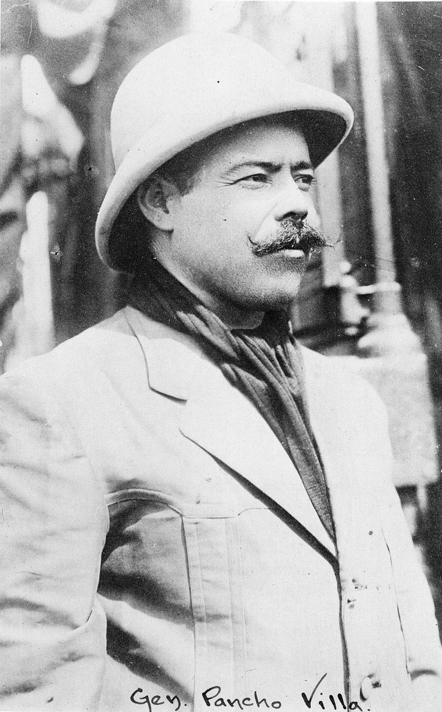

Doroteo Arango creció en la pobreza y la violencia en el norte de México. A una edad temprana, se vio obligado a huir de su hogar debido a la muerte de su padre y la violencia local.
| Doroteo Arango |
|  |
Doroteo Arango creció en la pobreza y la violencia en el norte de México. A una edad temprana, se vio obligado a huir de su hogar debido a la muerte de su padre y la violencia local.
Se dice que después de haber matado al hombre que había abusado de su hermana, Arango huyó a las montañas. Durante su tiempo en la clandestinidad, cambió su nombre a Francisco Villa en honor a su abuelo, Jesús Villa. Además, el nombre "Francisco" también era en honor a Francisco I. Madero, un líder revolucionario que luchaba contra la dictadura de Porfirio Díaz.
Bajo el nombre de Francisco Villa, se involucró en la Revolución Mexicana, uniéndose a las fuerzas rebeldes que luchaban contra el régimen de Porfirio Díaz y luego contra el gobierno de Victoriano Huerta.
| Fechas | 5 de jun. de 1878 | 1894 | 1910 | 1911 | 1913 | 1914-1915 | 1917 | 1923 |
| Se cree que esta es la fecha de nacimiento de Doroteo Arango en el estado de Durango, México. Sin embargo, la fecha exacta de su nacimiento no está confirmada y puede variar. | A una edad joven, Villa mata a un hombre llamado Agustín López Negrete en venganza por la violación de su hermana. | Se une al movimiento revolucionario liderado por Francisco Madero contra el presidente Porfirio Díaz, marcando su entrada en la política y en la lucha armada. | Villa lidera exitosamente las fuerzas revolucionarias en la Batalla de Ciudad Juárez, lo que contribuye significativamente a la caída del régimen de Porfirio Díaz. | Después del asesinato de Madero, Villa se convierte en uno de los principales líderes del movimiento revolucionario en su lucha contra el presidente Victoriano Huerta. | Durante este período, Villa y su División del Norte llevan a cabo varias acciones militares, incluyendo la famosa incursión en Columbus, Nuevo México, en 1916, en represalia por el apoyo estadounidense a su rival, Venustiano Carranza. | Después de la Revolución Mexicana y la instauración de la nueva Constitución, Villa se retira de la vida política y militar activa. | Francisco Villa es asesinado en Parral, Chihuahua, por un grupo de hombres armados. Su muerte pone fin a la vida de uno de los líderes más destacados de la Revolución Mexicana. |